PASS
Fleet health wave-1 review fixes (#241), branch
claude/fh-241 (head a4b1bd5) against master 73de941 rendered in headless Chromium.| Viewport | Pixels different (page, machine expanded) | Delta | Pixels different (no machine expanded) | Delta |
|---|---|---|---|---|
| 1280×800 | 7,863 | 0.27% | 6,476 | 0.34% |
| 768×1024 | 7,738 | 0.39% | 6,477 | 0.47% |
| 360×800 | 7,886 | 0.6% | 6,508 | 0.69% |
What I see different
- Areas of concern, every viewport. The small coloured dot in front of each concern is now a shaped icon: a red circle with a cross for critical, an amber clock for warning, a grey circle with a slash for info. The title and the sentence under it start about 6 px further to the right to make room. Nothing else in the list moved.
- Memory bar in an expanded machine (callisto), every viewport. Before, the bright "used" bar (11.7 GB) sat on top of the "reserved" bar (8 GB), so the reservation vanished. Now the bright part stops at 8 GB and the extra 3.7 GB is drawn as an orange hatch. The CPU bar looks the same as before (it was never hiding anything).
- "Machine detail" box under the machine list, every viewport. With a machine open it now reads "Showing callisto: what it is doing now and what it ran in the window are in its row above." in a solid-bordered box. With nothing open it is the same dashed box and the same sentence as before.
- Clicking a concern that names a machine. On master the page scrolls to the machine and leaves it closed. On this branch the machine opens and the box above names it (see "Link click, before / after").
- Not visible in pictures, checked separately. Weights are whole percents and "—" for no score (the demo data already had whole numbers, so nothing moves), the "not enough data" explanations come from the server, and the oldest-job wait now follows the clock (master 7 min, branch 84 h 54 min on today's clock).
- The fleet score card, the live strip, the category legend and every other row of the machine list are pixel-identical at all three widths.
1280×800 MATCH outside the intended regions
Wipe slider
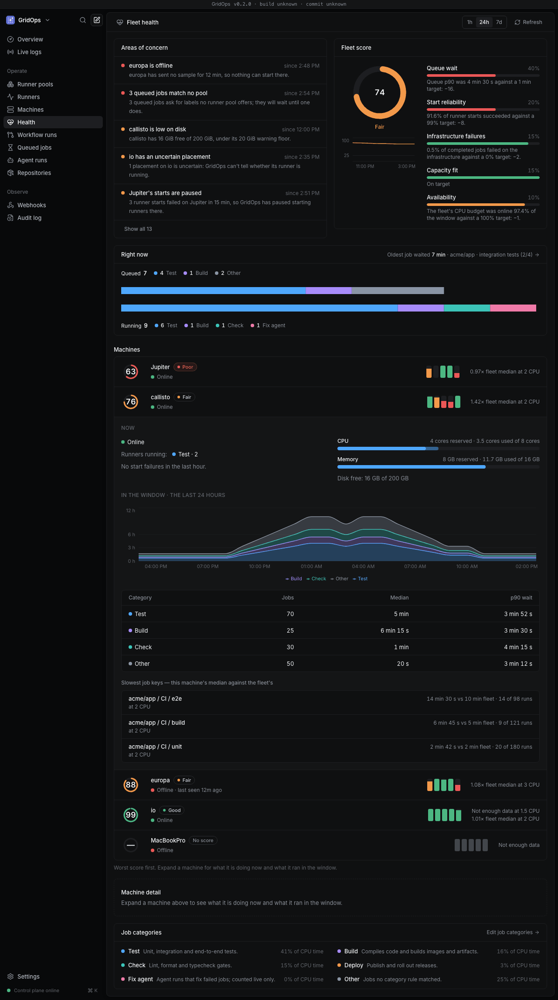
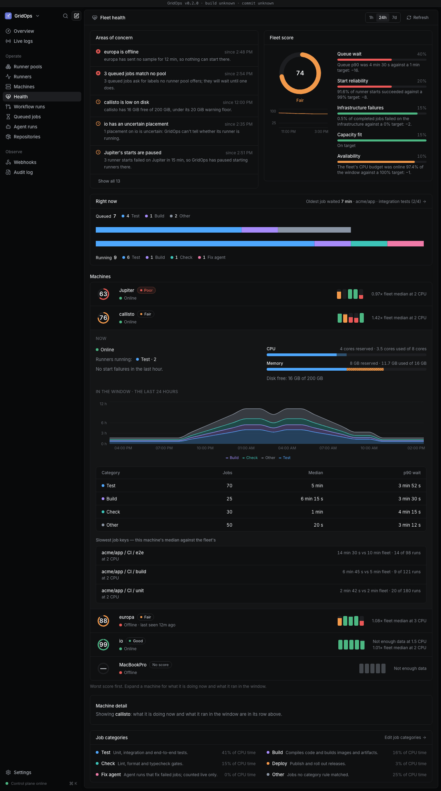
◀ live (branch)reference (master) ▶
Pixel difference (red = changed)
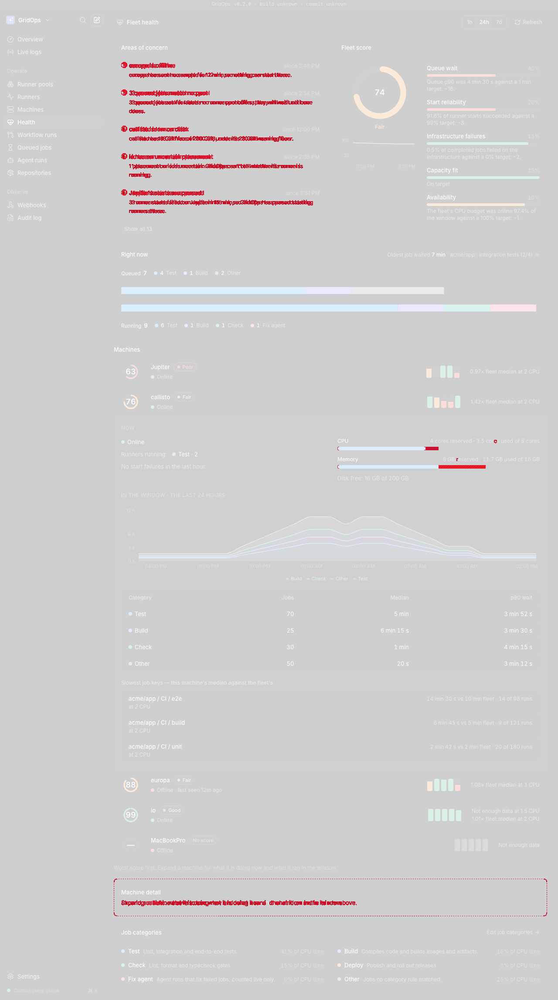
Side by side (live left, reference right)
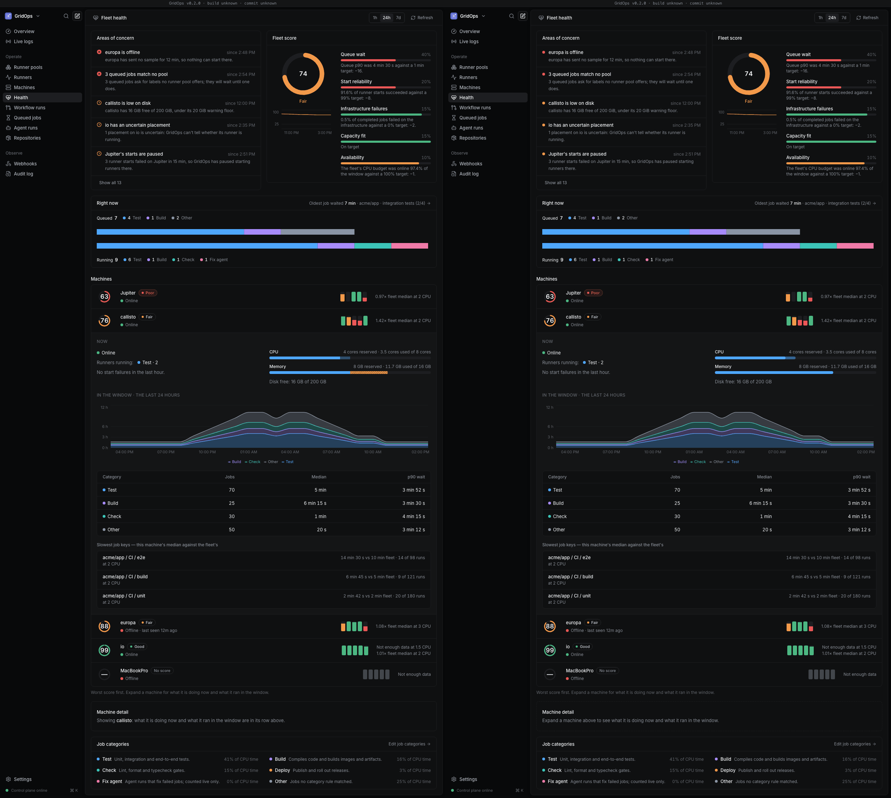
768×1024 MATCH outside the intended regions
Wipe slider
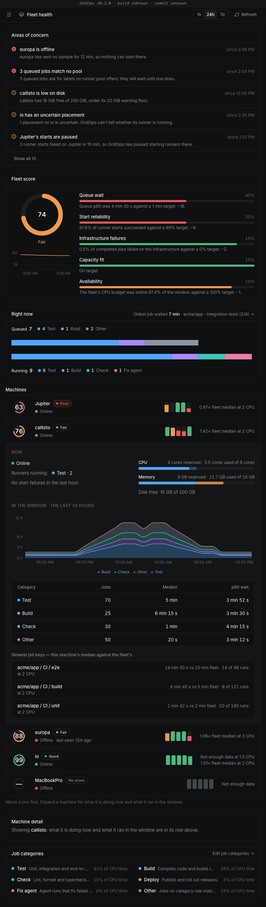
◀ live (branch)reference (master) ▶
Pixel difference (red = changed)
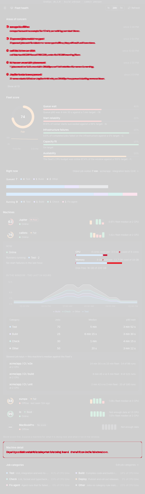
Side by side (live left, reference right)
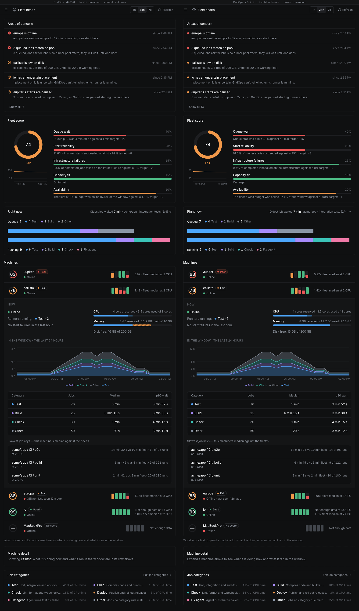
360×800 MATCH outside the intended regions
Wipe slider
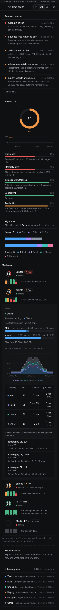
◀ live (branch)reference (master) ▶
Pixel difference (red = changed)
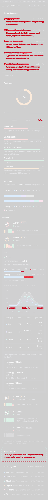
Side by side (live left, reference right)
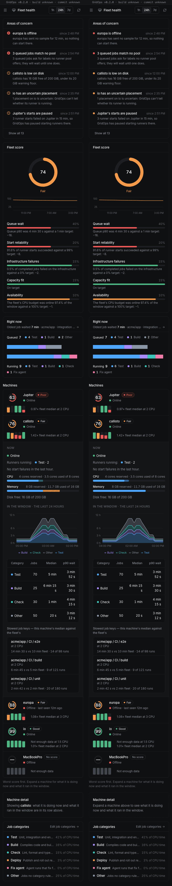
Per-section delta table
| Section | Viewport | Status | Description | Crop preview |
|---|---|---|---|---|
| Areas of concern (rows) | 1280: 3.56% 768: 2.81% 360: 4.71% | DELTA, intended | Dot replaced by a shaped icon; text starts about 6 px further right. Brief item 1, wireframe frame 1. | 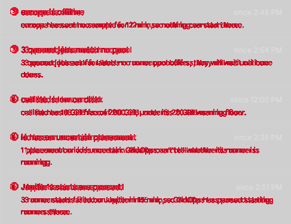 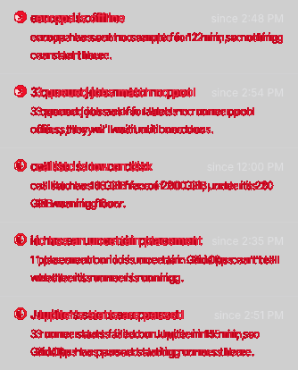 |
| CPU and memory bars | 1280: memory 10.63%, CPU 0.19% 768: memory 10.62%, CPU 0.21% 360: memory 10.59%, CPU 0.24% | DELTA, intended | Memory: used no longer hides the reservation; the part above it is hatched orange. CPU unchanged to the eye. Brief item 5. | 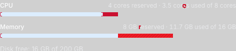 |
| Machine detail box | 1280: 1.15% 768: 1.53% 360: 2.71% | DELTA, intended | Names the open machine, solid border instead of dashed. Brief item 6, wireframe frame 6. | |
| Fleet score, live strip, category legend, rest of the machine table | all | MATCH | 0 to 0.07% (the last is 140 px of a chart time label that varies between captures of the same build at 360). | All sections match. |
Link click, before / after
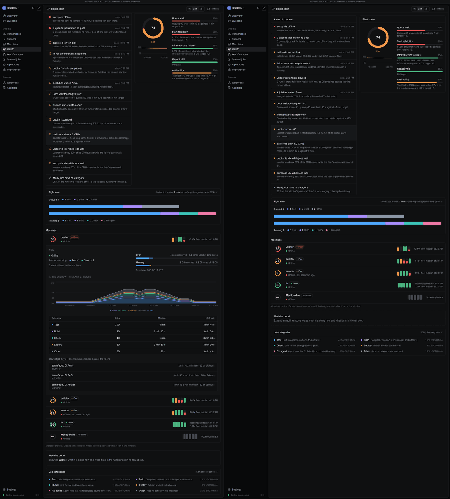
| master 73de941 | branch | |
|---|---|---|
| Jupiter's row after the click | aria-expanded="false", still closed | aria-expanded="true", open, scrolled into view |
| Machine detail box | "Expand a machine above…" | "Showing Jupiter: …" |
Other checks
- Accessibility (axe-core, WCAG 2.x A/AA and best practice, 360 and 1280). The same single rule fails on master and on the branch, with the same node counts (12 at 360, 17 at 1280): colour contrast of the faint grey timestamps and weights. Nothing new from #241.
- Glyph contrast against the card background (15, 16, 17). Critical 5.47:1, warning 8.55:1, info 6.28:1. All above the 3:1 needed for graphics.
- Console. No errors and no warnings on either build at any viewport or state.
- No sideways scroll at 360 in any state.
Sub-issue recommendations
None. The verdict is PASS. Non-blocking notes for O are in the handoff (design-doc sentence, chart tab stops, text-faint contrast).